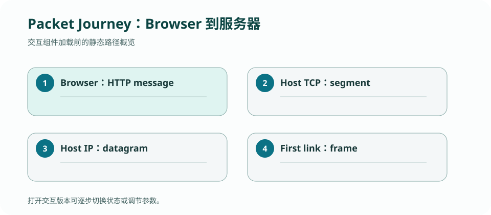

CS 168 · LECTURE 03 · 2026-09-03 · 互联网地基
把 HTTP 消息一路封装成 TCP segment、IP datagram 与 Ethernet frame，再在每一跳拆换链路首部。
版本快照：Fall 2026 官方课表与在线教材，核对日期 2026-09-02；官网仍标注 under construction，日期与政策可能变化。
为什么路由器可以转发 HTTPS 流量，却通常不知道用户请求的是哪个页面？
发送端应用产生消息，TCP 加入端口、序号和标志，IP 加入源/目的地址与 TTL，链路层再加入本跳可达所需的地址和校验。接收端按相反顺序解复用。每层的 payload 正是上一层完整的协议数据单元。
封装让路由器只需解析到 IP 层便能工作；它不必理解 TCP 重传、DNS 名称或 HTTP 内容。这种信息隐藏既降低演化成本，也限定了网络中间设备能做的优化。
IP 源/目的地址通常端到端不变，但 TTL 每过一台路由器减一，IPv4 首部校验和随之更新。Ethernet 源/目的 MAC 只服务当前链路，到下一条链路必须换成新的两端地址。TCP 序号与端口由端点解释，普通路由器无需修改。
NAT、隧道与代理是重要例外：它们会修改或额外包裹跨层字段。看到抓包差异时，先问路径中是否有显式中间盒，而不是立刻认为协议定义失效。
同一块网卡承载多种链路层 payload，EtherType 指出上层是 IPv4、IPv6 等；IP Protocol 字段指出 TCP、UDP 或 ICMP；TCP/UDP 端口再把数据交给应用 socket。这是一串逐层 key lookup。
“端口”也有两个不同语境：路由器的物理/逻辑接口决定从哪条链路发送；传输层端口是 16 位标识，帮助主机把 segment 交给进程。项目 2 的 simulator port 与 TCP port 不能混用。
每层首部消耗字节，链路还有最大传输单元（MTU）。若上层交付对象过大，就必须由某层分段或分片。现代 TCP 通常按 MSS 控制 segment payload，尽量避免 IP 分片。
调试时要用首部中的长度字段推进 offset，不能假设 IPv4 永远 20 B：IHL 指出实际首部长度，IP options 会改变后续 ICMP/UDP 首部的位置，这正是 Traceroute 1B 的典型边界。
封装是包含关系与跨层状态变化，逐步展示比静态术语表更容易建立包的心智模型。

为 UDP Traceroute 的出站 probe 和返回 ICMP Time Exceeded 各画一棵封装树，指出返回包中为什么还嵌有原始 IP 首部与至少 8 B payload。
检查：IP 包从主机 A 经路由器到主机 B，哪项通常会在路由器处改变？
假设浏览器 10.1.2.7/02:aa:aa:aa:aa:07 访问服务器 203.0.113.9:443，第一跳网关接口是 10.1.2.1/02:bb:bb:bb:bb:01。先问自己：IP 地址标识端到端主机接口，MAC 地址只负责当前链路，端口把字节交给端点进程，TTL 限制数据报还能经过多少个路由器。
检查：路由器 R 转发普通 HTTPS 数据报时，必须知道哪个信息？
下面不是协议名清单，而是同一批应用字节在设备、首部与表之间的完整旅程。为突出不变量，暂不引入 NAT 或代理。
| 步骤 | 对象 / 事件 | 添加或移除 | 地址与状态 | 谁理解它 |
|---|---|---|---|---|
| 0 · Browser | GET / 字节 | 生成 HTTP message | 目标由 URL 解析成 203.0.113.9:443 | 应用 |
| 1 · TCP | message → segment | 加 TCP 头 | src port 51514，dst port 443；序号纳入发送状态 | 两端 TCP |
| 2 · IP | segment → datagram | 加 IP 头 | src IP 10.1.2.7，dst IP 203.0.113.9，TTL 64 | 主机与路由器 |
| 3 · Host link | datagram → frame | 加第一跳 Ethernet 头 | src MAC 02:aa…07，dst MAC 02:bb…01 | 本链路网卡 / 交换机 |
| 4 · Router input | frame arrives | 验帧并移除链路头 | 路由器看到 IP dst；TCP/HTTP 仍是 payload | 路由器输入端口 |
| 5 · Router forward | IP datagram | TTL 64→63；更新 IPv4 header checksum | src/dst IP 和 TCP ports 不变；查 FIB 选出口 | 路由器 IP 层 |
| 6 · Router output | datagram → new frame | 加下一跳链路头 | MAC 换成 R 出口与下一跳；IP 仍为两端地址 | 路由器输出端口 |
| 7 · Destination | frame → datagram → segment → message | 逐层移除头 | Protocol→TCP，dst port 443→server socket | 服务器协议栈 |
跨越全程的不变量：在没有 NAT/隧道/代理时，目的 IP、TCP 端口和应用字节保持端到端语义；逐跳变量是链路地址，TTL 每跳递减。
检查：第 5 步之后，哪个组合正确？
检查：目的主机用什么顺序把数据交给 HTTPS socket？
远端服务器的 MAC 在本地链路上没有意义，交换机也不会跨互联网学习它。主机会把帧交给默认网关；路由器必须为下一链路重新封装。若错误地保留原目的 MAC，下一链路无法把帧交给正确 next hop，即使 IP 路由完全正确也会停住。
反过来，如果路由器把 IP 目的地址改成 next hop，下一台路由器会误以为数据报已经抵达该接口，端到端目的地被破坏。这说明 link address 与 network address 不是重复字段，而是解决不同范围的问题。
不看上表，填写路由器转发后的 src MAC / dst MAC / src IP / dst IP / TTL / src port / dst port。再指出 NAT 出现时哪一项会成为例外。
检查：若路径形成转发环，哪个字段保证单个 IP 数据报最终停止？
检查：抓到两个帧，IP 五元组相同但 MAC 两端不同，最合理的解释是什么？
答案必须同时说清设备、地址作用域、解复用键和 TTL；只背“二层换、三层不换”还不足以解释原因。
正文是 CourseStack 的中文解释与重新绘制的教学例子；官方页面负责课程原始定义，历史仓库只提供你的实现证据。